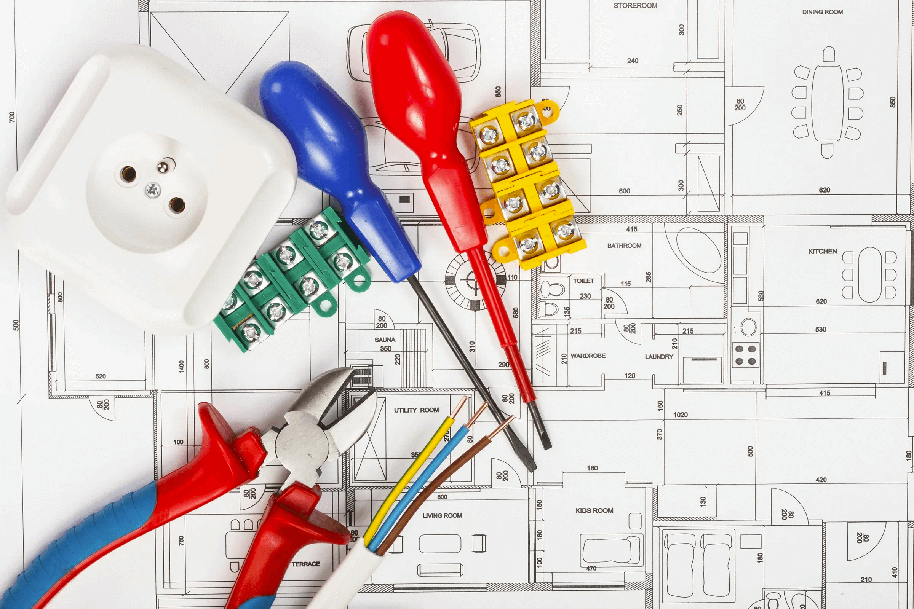

Мы занимаемся электрикой уже более 10 лет. У нас Вы получите
гарантию 5 лет на все виды электромонтажных услуг. Озвучим
стоимость в течении 15 минут!

Электромонтажные работы в частном доме под ключ
Основные требования к электроснабжению это – надёжность и
безопасность. . Для создания электроснабжения необходимо
произвести точный расчет электропотребления. От этих показателей
будет зависеть выбор электропроводов и защитных устройств. Перед
началом работ необходимо заключить договор на электроснабжение
дома, а после прокладки проводки и подключения оборудования
требуется установить счетчик и открыть счет для оплаты
электроэнергии.
Мы делаем электротехнические работы в Воронеже, вне зависимости от
уровня сложности и можем полностью обеспечить проводкой Ваш
частный дом. Профессионалы нашей организации прибудут и
внимательно изучат помещение. Оперативно произведут расчет
материалов и составят смету. Работы выполняются с максимальной
скоростью, при помощи отличных материалов и недорого.
Все материалы можно приобрести в нашей компании и дополнительно получить скидку до 30%!
Наши мастера могут провести и другие работы, связанные с
электричеством, в Вашем жилье!
Бесплатный выезд мастера за черту города до 20км.